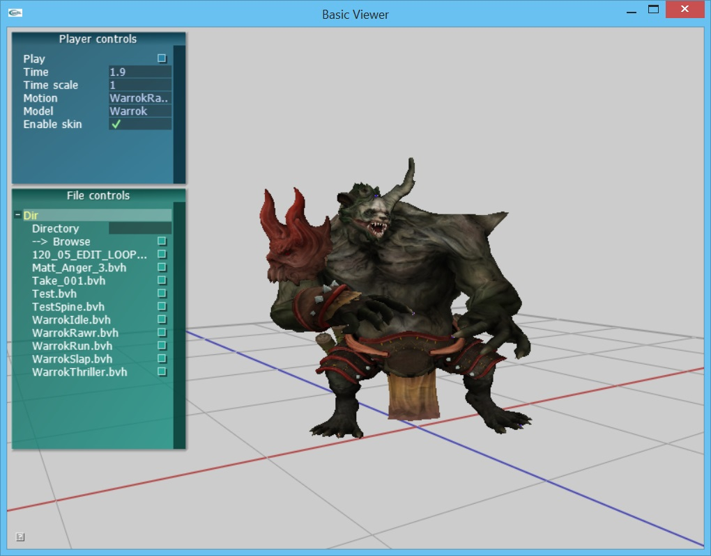

Transformations
and forward kinematics
In this assignment, you will implement transformations and forward
kinematics. The features you implement in this assignment will lay the
groundwork for working with motion capture and character animation.
Specifically, after completing this assignment, you will be able to
load a BVH motion capture file and play back the animation on a
character.
About the basecode
This assignment builds on the previous assignments,
adding a new library and applications. If you did not complete
assignment 1, you may edit the basecode project file to use the
solution library. Right click on the BVHViewer project, select
Properties, and then expand the Linker options. Select 'Input' and then
edit the 'Additional Libraries' to point to libAssignment1-soln.lib
instead of libAssignment1.lib.
User interface overview
The basecode includes a simple interface and 3D viewer for loading and playing BVH files. See below for a screenshot. By default, we will load a character and several example BVH files.
The camera can be controled with the mouse:
- Left-button drag with the mouse to rotate
- Right-button drag with the mouse to pan
- Middle-button drag with the mouse to zoom
- 'f' button will focus the view on the character
The player control panel on the top left can be used to load and play files. The panel at the bottom left can be used to load different BVH files.

Character animation implementation overview
The basecode includes a framework for organizing transforms into a hierachy and animating them using curves. The core data structure for supporting this functionality is the AnimatableTransform, which maintains pointers to parent and child transforms. The AnimatableTransform primarily contains a Transform which keeps track of its position relative to its parent. It also stores its transform relative to the world coordinate system for convenience.
AnimatableTransforms are arranged into a hierachy with the AnimatableHierarchy class. The root of the AnimatableHierarchy is positioned relative to the world coordinate system whereas all other joints are positioned relative to its parent in the hierachy. Although the AnimatableHierachy could be used to animate any group of transforms, for character animation it is natural to think of the AnimatbleHierachy as an actor and its corresponding AnimatableTransforms as joints.
To support BVH files, we populate an AnimatableHierarchy using the skeleton information from the file. We then initialize curves based on the BVH file's motion data and store the result in BVHController. In the case of BVH, where joint limbs do not change length, the bvh controller only manages a single translational curve for the root joint. However, the BVHController does manage rotational curves for both the root and every joint. During playback, the BVHController queries the animation curves and then updates the transformations accordingly.
To summarize, the class hiererachy used for this asignment is the following:
BVHController
AnimatableHierarchy (aka Actor)
ASplineVec3 for the root joint position
ASplineQuaternion for each AnimatableTransform (aka Joint).
Assignment
1. (20 points) Transformations. You will complete the implementation of the Transform class. These features will support a character skeleton whose limbs are arranged in a hierarchy where each child is positioned relative to its parent.
- (5 points) Implement Transform::Inverse()
- (5 points) Implement Transform::TransformPoint()
- (5 points) Implement Transform::TransformVector()
- (5 points) Implement operator* () for the Transform class
2. (10 points) Forward
kinematics is the process of computing each transform's position relative to
the world's coordinate system. We read in each joint's local
translation from the BVH file and then update each joint's local
rotation as we playback the motion. The global transformations are
computed by propagating the transforms of each parent to its children. Implement AnimatableHierarchy::updateHierachy() and AnimatableTransform::updateTransformation().
Build and Submission Instructions!